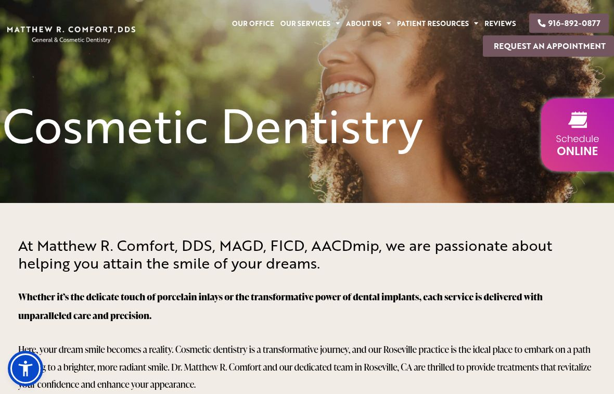

Long-term local care
The doctor’s bio describes serving Rocklin, Roseville and surrounding communities since 1998.
Vessel Archive × Matthew R. Comfort, DDS / A local marketing review
We’re Vessel Archive, a local Sacramento team. We help local businesses get more leads, inquiries and bookings with local Meta ads (Facebook and Instagram), the content for those ads, and local SEO: helping people nearby find you through your Google Business Profile, website and useful blog content.
What we found + how we’d help ↘The credentials are there. Bring the person forward.
We reviewed Matthew R. Comfort, DDS the way a potential client would, and the way an owner deciding where to spend a marketing budget would. Here’s what already builds confidence, what could make someone hesitate, and how we’d improve it.
01 / First, what you’re already doing well
Dr. Comfort’s published bio documents local care since 1998 and a substantial teaching and cosmetic-training background. The live Google profile showed 4.9 stars from 400 reviews. That experience deserves a clear introduction.
The doctor’s bio describes serving Rocklin, Roseville and surrounding communities since 1998.
The bio documents University of the Pacific training, a teaching background and UCLA cosmetic study.
Service pages, a Smile Analysis resource and an online scheduling widget already provide places to build from.
There is useful depth here. A few concrete changes would make the story, clinical proof and contact path more coherent for a prospective patient.
In our live homepage session, the header displayed 916-892-0877 but linked to 916-251-1092. The main call button matched its label. Call tracking can explain number rotation; a mismatch within one link still deserves a check.
Live homepage header / label and tel target ↗Why a customer might hesitateA visitor tapping a phone number expects the displayed number to be the destination. A mismatch creates avoidable uncertainty even if both numbers reach the practice.
Have the current tracking owner validate the header’s text and telephone target together. Test the intended routing without replacing the existing call-tracking setup blindly.
The page starts its treatment list with composite and amalgam fillings, followed by implants, veneers and whitening. The sampled page does not present a contextualized patient case or a doctor-led explanation.
Cosmetic Dentistry / sampled service page ↗Why a customer might hesitatePeople considering cosmetic care may understand the treatment list without seeing how the doctor approaches a real case. A useful example can make the next conversation easier.
Reorganize around the decisions cosmetic patients are making. Add a relevant practitioner video and selected, consented case stories with timing, limitations and treatment context.
The site offers Request an Appointment and a separate Schedule ONLINE widget. The contact page explains that its form is a request and the team will follow up. Visitors should know the difference before choosing.
Contact page and homepage scheduling controls ↗Why a customer might hesitateA patient should know whether they are booking a time or asking for a callback before choosing a button. Clear labels make that choice easier.
Confirm which patients can use online scheduling. Make that route easy to find, keep requests clearly labeled, and test the confirmation and staff handoff on mobile.
The biography carries extensive education and experience. A short video introduction and concise credential summary would make the most relevant details easier to absorb.
Connect the existing resource to useful cosmetic content and an appropriate consultation route. Validate its completion and follow-up before promoting it.
The site links Careers to Mosaic Dental Collective and shows existing scheduling infrastructure. Confirm approval responsibilities and measurement ownership first.

The findings above link to the pages we reviewed on October 20. The customer impact is our practical judgment, not a measured count of lost inquiries. We would confirm the details with your team before making changes.
View the practice website ↗The live Google profile showed 4.9 stars from 400 reviews on October 20, 2026. The practice address and website were visible in the same profile.
Live Google profile ↗Vessel would: Keep the profile, website and booking route aligned, and bring accurately attributed review proof into the patient journey. Counts are a dated snapshot, not a permanent total.
Google’s verification screen prevented a fresh mobile PageSpeed run in this review. No speed score is inferred from a failed or incomplete test.
Practice website ↗Vessel would: Establish the mobile baseline, then validate navigation, image loading and the first useful action on real devices before scaling traffic.
The public @smilesbycomfort Instagram profile includes video content. Public profile inspection did not establish a reliable latest-post date; sign-in restricted the post-detail checks. This is not evidence of inactivity.
Official Instagram profile ↗Vessel would: Build on the existing voice. Review a dated content sample with account access, then connect the strongest practitioner explanations to the relevant service pages.
Meta Ad Library showed no matching active ads for the selected official advertiser with United States and All ads filters on October 20. This does not rule out other advertiser accounts, countries or channels.
Selected Meta advertiser ↗Vessel would: Confirm account ownership and existing campaigns first. Any proposed paid test should use approved creative, a focused page and a verified inquiry handoff.
Google, Meta and CallRail website/ad/phone measurement tools are present. These are pieces of code used for measurement. Seeing them does not prove that inquiry tracking, consent or reporting work correctly.
Website script review ↗Vessel would: Preserve useful existing tools. Check which inquiries are recorded, how booking is handed to the team, and how reporting respects patient privacy with the account owner.
Local AI search queries were attempted, but a complete answer capture could not be verified for this practice. No ranking failure or universal AI absence is asserted.
Practice content baseline ↗Vessel would: Use Search Console and a repeatable local query set to establish a baseline. Improve the practitioner, service and case context that both people and search systems can understand.
Public checks dated October 20, 2026. Account-level measurement and clinical content would be confirmed with your team before changes are made.
The goal is straightforward: help the right local people find the practice, understand why it may fit, and take a clear next step. We would agree the focus and responsibilities together.
Confirm responsibilities with the current marketing owner, then test one service and a small set of approved Facebook and Instagram ad ideas for the local area.
Plan real practitioner-led video and practice photography. Edit approved material for Facebook, Instagram and the website, so the ad and the page tell the same story.
Keep the Roseville Google Business Profile and practitioner details current. Connect useful cosmetic-care pages, case explanations and blog answers to a clear consultation route. Local SEO means making the practice easier to find and understand in relevant nearby searches.
Restructure the priority service page around patient decisions, real case context and a clear next step. Confirm what the visitor sees next and how the team follows up.
Vessel: strategy, page design and implementation, shoot planning, filming, editing, approved campaign work and reporting.
Your team: clinical accuracy, patient permissions, capacity, access approval and the patient response process.
We’d agree the page list, filming schedule, campaign responsibilities and approvals together before work begins.
Bring the questions, the people and the setting together. A planned shoot should produce useful explanations that feel like the practice.
Dr. Comfort walks through the questions and observations that shape a treatment plan, without diagnosing viewers or promising a result.
Explain the factors that influence treatment choice and the limits of a short video. Invite a proper clinical assessment.
A concise practice story drawing on the doctor’s local experience and teaching background, filmed in the real office.
Filming is proposed. Any patient appearance or clinical claim needs appropriate permission and practitioner approval.
The sequence matters: agree the story, make the journey work, then learn from real inquiries. Dates depend on access, approvals and scheduling.
Validate the call-link mismatch and booking hierarchy. Agree the service page, case permissions and doctor interview outline with the practice and marketing owner.
Publish the focused cosmetic page and approved films. Test a coordinated local campaign only after existing measurement and handoffs are confirmed.
Review inquiry quality, completed bookings and content questions. Improve the page and creative based on the available practice data.
Local work. Real clients. A team you can talk to.
 AIMS Sports Recovery ↗
AIMS Sports Recovery ↗ Megan Meyerdick · Precision Home Loans
Megan Meyerdick · Precision Home LoansLet’s walk through the review together, choose one priority service and decide what to tackle first.
Talk through the first step ↗teo@vessel-archive.com · Sacramento, California